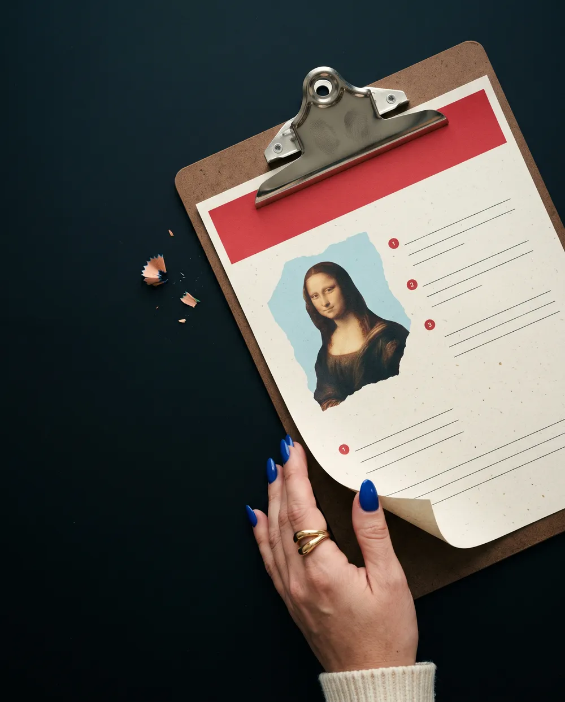
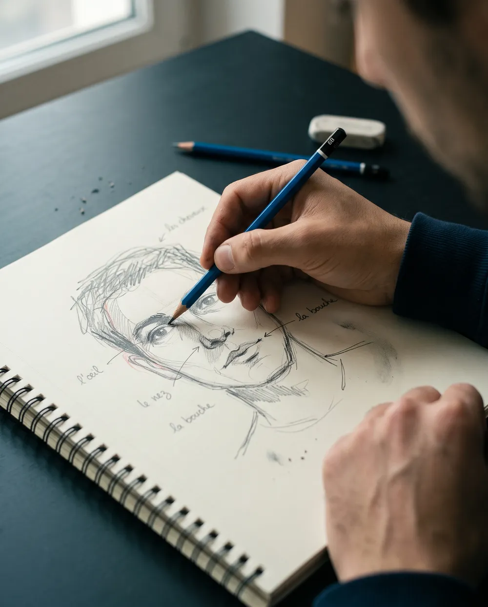
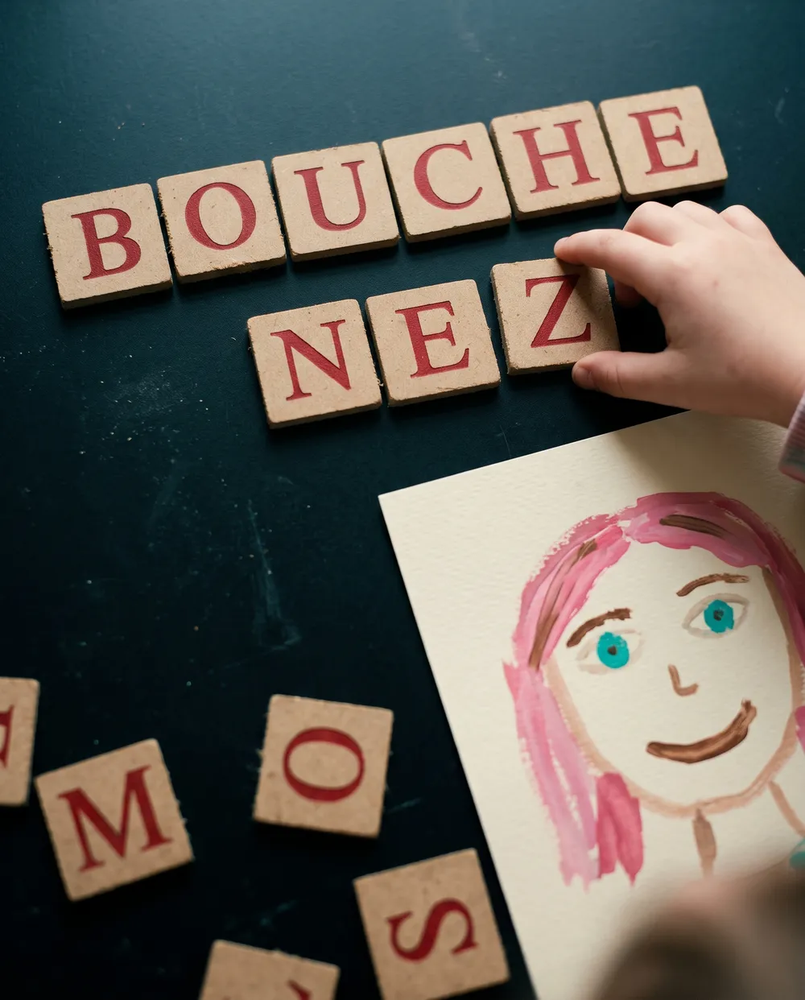
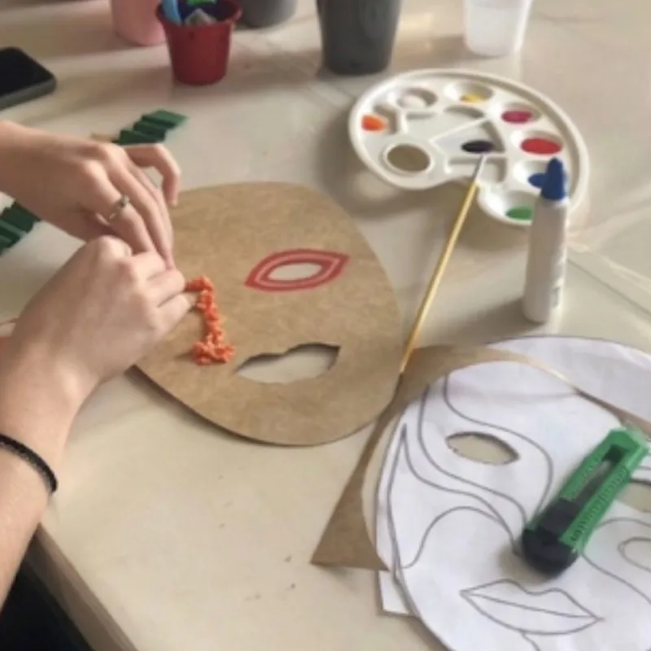
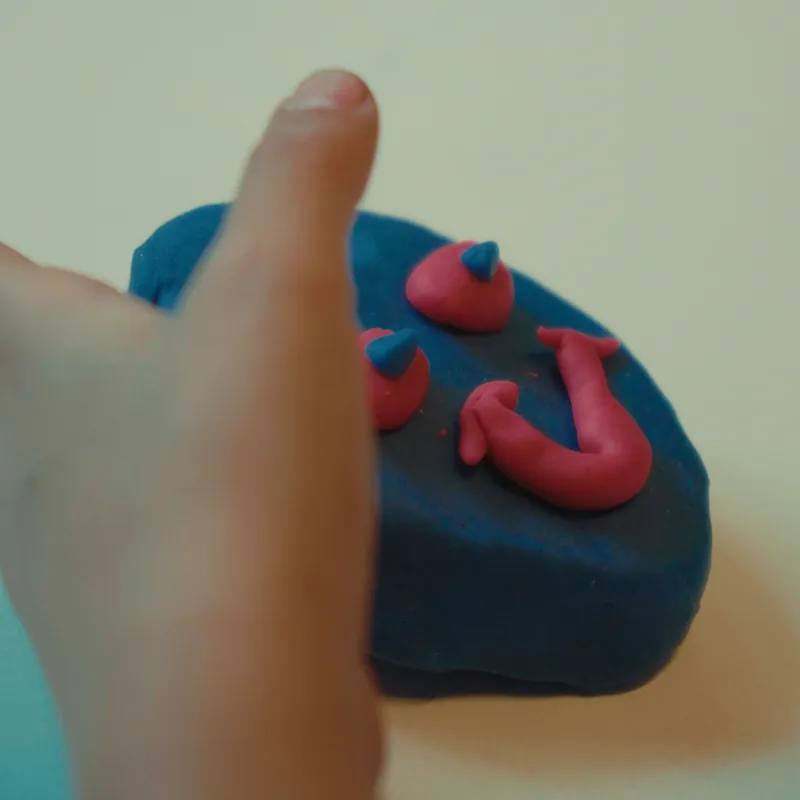
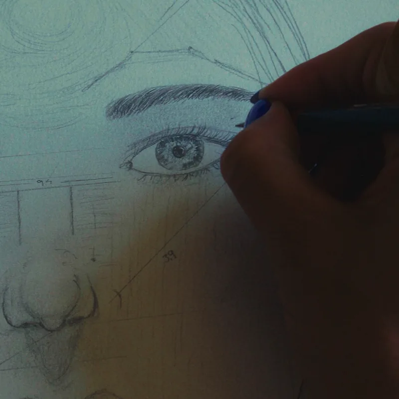
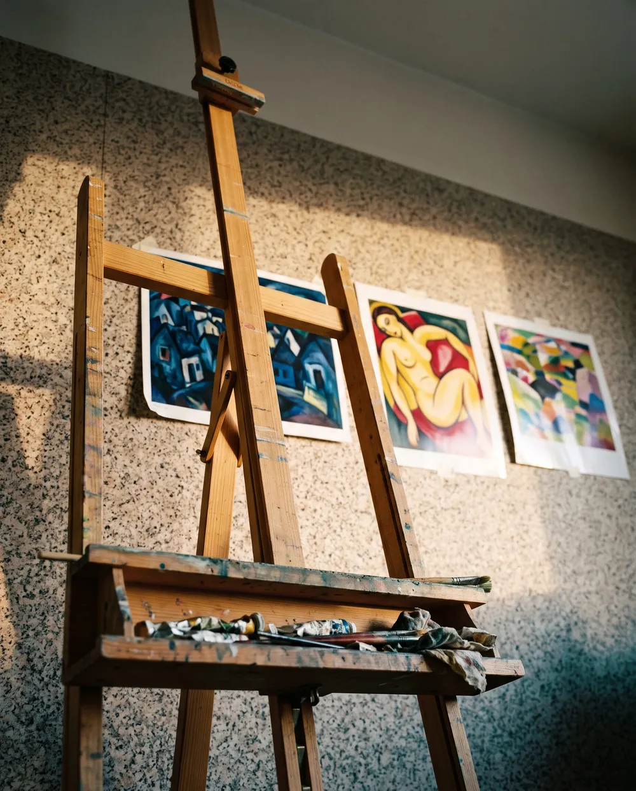
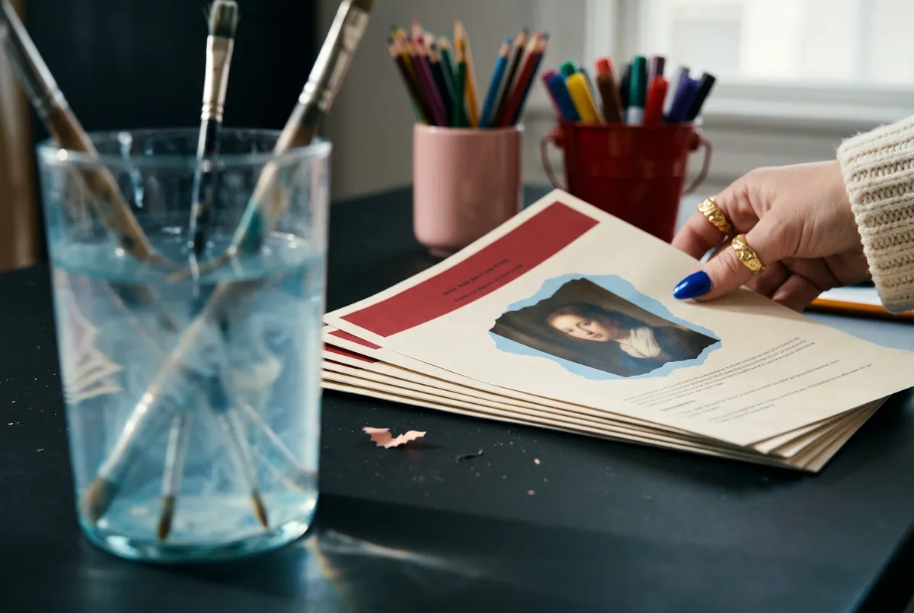

O método
Primeiro o francês. Depois, a arte que conversa com ele.
Como cada aula é pensada
A Thiessa monta o material sempre na mesma ordem. A gramática vem primeiro, porque é ela que sustenta tudo o que a gente quer dizer.
Um conteúdo de francês
Quase sempre um tema de gramática, como o verbo être no nível iniciante.
Uma experiência artística
Escolhida para dialogar com esse conteúdo: desenho, pintura, música, poema ou outra linguagem.
Uma obra de arte como ponto de partida
O material traz obras de referência que abrem os exercícios e ampliam o vocabulário.
Exemplo de aula
Je suis… (eu sou…): como o autorretrato ensina o verbo être
O aluno aprende a se apresentar em francês e, ao mesmo tempo, desenha o próprio rosto. Olhos, nariz, boca e cabelo viram vocabulário; as próprias características viram frase.
É um exemplo entre muitos: a mesma prática vale para outros temas e objetos, como a casa, a comida, os animais e as cores. Muda o assunto, muda a obra de referência e muda a linguagem artística, mas o caminho é o mesmo.



Trabalhos dos alunos
Uma pequena seleção do que nasce nas aulas. Os trabalhos aparecem sem o nome completo de quem fez.




Nem sempre é desenho
Cada tema de gramática pede a sua linguagem. Às vezes é uma pintura, às vezes uma música, um poema ou uma cena de filme.
- Pintura
- Desenho
- Colagem
- Música
- Poema
- Teatro
- Cinema


Um material feito para cada aluno
O material didático é criado pela Thiessa e elaborado ou adaptado ao objetivo de quem aprende. Quem quer conversar, por exemplo, recebe um material voltado para a conversa.

Não sei desenhar. e agora?
Não precisa saber. O desenho é um caminho para a língua, não uma prova. Ninguém é avaliado pelo traço; o que conta é o francês que vem junto.